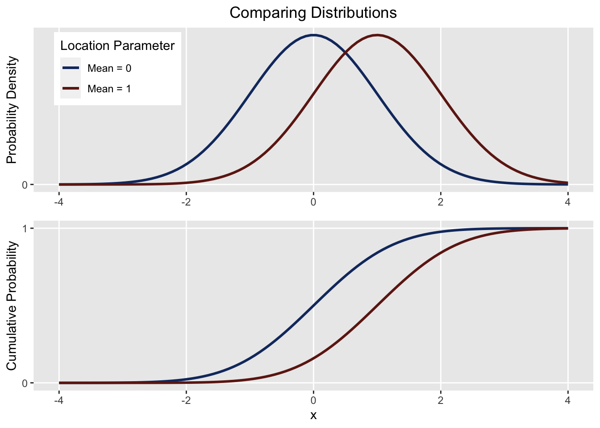

Introduction
Goal: We’ve got two samples, and want to see if there’s the significance difference in means.
Background
Comparing differences in means is one of the most commonly used procedures in statistics. Take the following use case: Does Product A have better ratings than than Product B? Sure, we could compare averages (i.e. Product A’s mean rating is \(4.83\), better than Product B’s \(4.79\)), but it fails to answer the question: Are the population ratings for A better than B? We only have data from a sample of reviews, so we’ve got to somehow estimate the population differences in ratings.
Any student of introductory statistics knows the remedy: take into account the spread of the data using a two-sample t-test. But the t-test makes a few strong assumptions about the data, mainly the assumption of normality. This chapter describes alternative tests we can use instead.
Notation
Say you’re expecting population 1 to be lower than population 2. You’ll use a lower-tail test, and use a set of hypotheses like so: \[ \begin{aligned} \text{Null Hypothesis }H_0 &: \mu_1 = \mu_2 \\ \text{Alternate Hypothesis }H_a &: \mu_1 < \mu_2 \end{aligned} \]
In this section, we don’t necessarily know the distribution of our data, but we’re testing that the distributions, not necessarily means, are equal.
As such, our hypotheses will look something like:
\[ H_0: F_1(x) = F_2(x) \\ H_a: F_1(x) \geq F_2(x) \\ \text{ with a strict inequality for at least one }x \]
\(F(x)\) here refers to the empirical CDF, or the probability of seeing a value less than or below \(x\).
If the location of population 1 is below population 2, we’d expect that at a certain point \(x\), the probability of seeing a value at or below \(x\) should be higher for population 1 than it is for population 2. Here’s a visual:

From the first plot we see \(\mu_1 < \mu_2\), and from the second, \(F_1(x) \geq F_2(x)\). Both correspond to the “less than” hypothesis.
Diagnostics
A big assumption parametric tests take is that the data is normally distributed. There’s a few approaches we can take to validate this.
First is the QQ plot:
We could also use a more rigorous test of normality:
But its almost always just worth checking the distribution regardless: